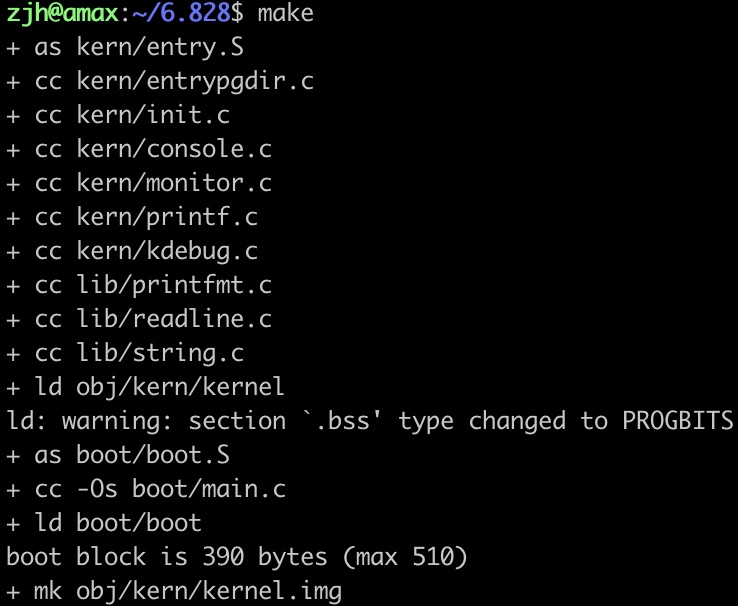
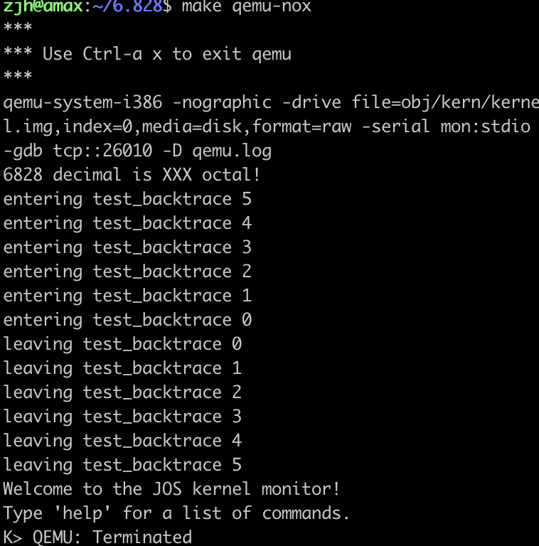

Prepare
文章目录
MIT 6.828 2018 准备阶段指南
MIT 6.828是操作系统中最经典的一门课程。完成所有的lab就相当于完成了一个迷你的操作系统。由于2019年的课程引入了6.S081课程，感觉scheduel部分略微混乱，选择了2018年的课程进行实验。
课程计划安排在官网。
具体准备过程参照了网上的博客 。
实验代码克隆
下载实验框架代码。
git clone https://pdos.csail.mit.edu/6.828/2018/jos.git 6.828
编译工具链
编译工具链是一个工具集包括c编译器，汇编编译器，连接器。
执行 sudo apt-get install -y build-essential gdb 进行下载。
在64位机上还需安装32位支持库 sudo apt-get install gcc-multilib。
执行 gcc -m32 -print-libgcc-file-name 验证是否成功。
QEMU模拟器安装
下载官方QEMU模拟器。
git clone https://github.com/mit-pdos/6.828-qemu.git qemu
执行 ./configure --disable-kvm --target-list="i386-softmmu x86_64-softmmu" --python=python2.7 确定安装设置。
执行 make && make install 。
可能需要root权限。
测试
进度实验框架代码文件夹。
cd 6.828
执行make，程序输出如下图。

执行make qemu-nox (ssh 连接，未使用图像化显示界面) 或 make qemu (图形化远程连接) ，程序输出如下图。

文章作者 Askl
上次更新 2020-08-26